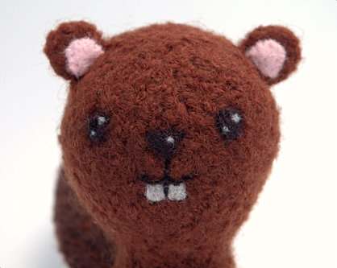

|
||
Premium Patterns Wintry Mix Mitts Love Bytes HawkeyeFree Patterns Kiddie Cadet Summerlin Ruffled Scarf Seamless DS Sock Simply Seamless Pouch Myriads of MushroomsExtras DIY Mitten Blocker Felt Patch Tutorial Yarn Dyeing Tutorial Needle Pouches Knitting Journal |
July 10, 2007 - Posted by Grace SchneblyI ain't no woodchuck!Like I said before, all I have been able to think about recently are backyard critters and lace! Thanks everyone for your wonderful comments on my Shetland Triangle. I really appreciate it and it has boosted my lace knitting confidence immensely. I thought while I was trying to decide my next lace project I would knit a Backyard Critter…  Project Specs It may seem like I am a little obsessed with these critters… well I am and I won’t deny it. Once you make a couple of them they get a bit easier, simply because you know what you’re getting yourself into. Also for some reason they’re extremely addictive to make. I really enjoy seeing each one come to life. As I make each one, I develop a little bio in my mind which really helps me add character to their faces. I know… I am crazy! They’re still tedious and the finishing is a pain, but now I consider making them a labor of love. I did the typical Grace-style finishing on this guys which means needle felting the face and seaming with a single ply from the yarn. I originally had the teeth about two thirds the size, but Si wanted them bigger. I think they are cute this way and now he really reminds me of Sponge Bob. The only thing that irks me about his face is that he really doesn’t have a chin, but what can you do. I absolutely love how the tail came out. I originally needle felted the cross hatching, but it barely showed up so I embroidered over it. It turned out great, and I am glad that I did the needle felting because it gave the tail some texture. I forgot to take a picture of the parts before I felted him, but they weren’t much different than those from the Swat Team Kitties. I don’t think that I will stop making these critters until I’ve either made them all or go crazy trying. They are good to make in between longer knitting projects and don’t require much yarn. I am going to try to make at least one a week, so I will apologize in advance for the flood of critters to come. Now I just need to decide which one to make next!! PS I am sure that all my neighbors think that I am insane for walking up and down the street picking up little twigs. They would probably think I was even more insane if told them it was for a miniature beaver lodge… |
   Recent ReviewsRecent Posts
 Our Favorites
|
| © 2007 KathrynIvy.com | ||
{kind=link}
{kind=link}